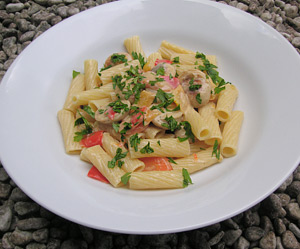

Arme Aesse (Bratensauce mit Bratwurst und Gemüse)
5 von 6Eine Zwiebel, 3 Karotten und je eine rote und eine gelbe Peperoni rüsten und in etwas Olivenöl 15 Minuten dämpfen. Eine einer separaten Bratpfanne 4 Bratwürste (in Ringli geschnitten) anbraten, mit Weisswein ablöschen und das Gemüse dazu geben. Bratensauce, etwas Parmesan sowie 2.5 Dl Rahm beigeben und etwas einkochen lassen. Abschmecken und mit Pasta servieren.
